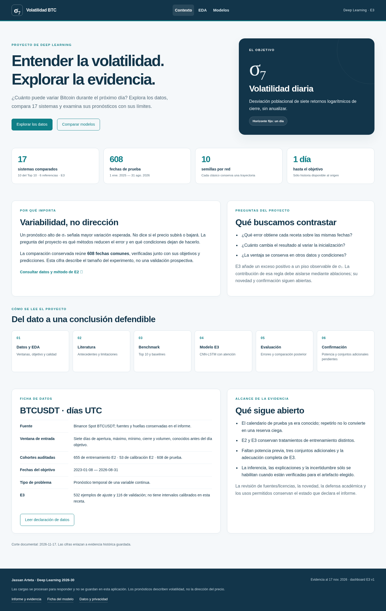
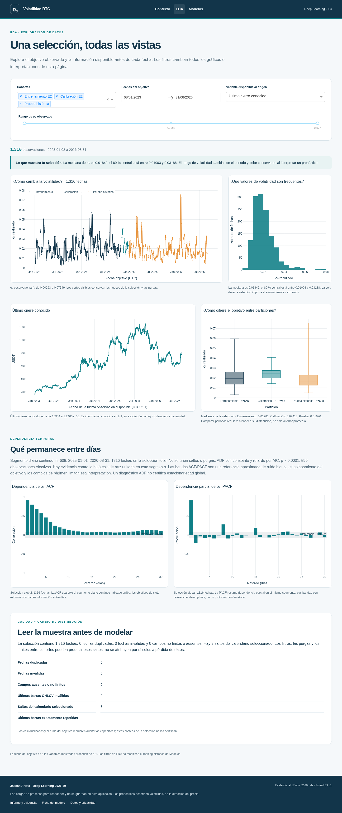
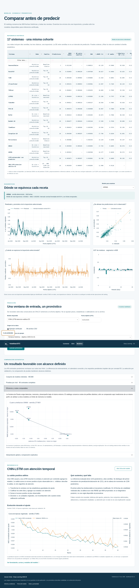

9 Bloque E Dashboard predictivo en Dash Plotly#
Estado: perfil local verificado con cinco modelos ONNX en vivo y doce sistemas precalculados; el operador informa Render Live, sin recibo de humo público aprobado de esta versión. La aplicación multipágina ofrece Contexto, EDA y Modelos. Integra datos y pronósticos conservados, y su registro de inferencia sólo habilita artefactos exportados con metadatos y comprobaciones de integridad. La publicación de este libro en GitHub Pages es distinta del servicio Dash.
El Bloque B conserva el linaje de selección y exportación; el modelo de referencia y el análisis posterior mantienen sus alcances. Hacer utilizable la evidencia no acredita novedad, defensa del autor o R3 ni convierte un calendario conocido en confirmación prospectiva.
9.1 Objetivo#
La aplicación permite entender qué volatilidad se pronostica, explorar la información disponible y examinar el error y las capacidades de cada sistema. La cantidad objetivo es sigma7 poblacional de siete retornos logarítmicos diarios de Close, sin anualización, con horizonte un día. Una salida alta indica más variabilidad esperada; no informa la dirección del precio o una probabilidad de beneficio.
El proyecto documenta 608 fechas históricas comunes, del 1 de enero de 2025 al 31 de agosto de 2026, para 17 sistemas. Es una cifra del experimento, con fuente y auditoría; no una validación prospectiva. El dashboard debe comunicar también qué se desconoce, cuándo una entrada extrapola y qué escenarios fueron desfavorables.
9.2 Alcance y límites de memoria#
El catálogo representa los diez modelos del Top 10, seis referencias y la CNN-LSTM de E3. Sus métricas medias proceden de 143 predictores: trece redes E2 con diez semillas, tres clásicos con una trayectoria y diez réplicas E3. El ranking conserva las 608 fechas y la métrica primaria media de RMSE individuales; los filtros EDA no vuelven a seleccionar recetas o semillas.
Las curvas y residuos usan un predictor representativo por sistema: semilla 271801 en las redes, elegida por su menor identificador, y la trayectoria única de cada clásico. Esa curva tiene su propia RMSE; no se presenta como la media de diez ejecuciones o como un ensamble.
Catálogo |
Evidencia histórica |
Capacidad del prototipo y límite |
|---|---|---|
FCN-1D, ResNet-1D, Inception-1D, LSTM-autoencoder, TimesNet, TiDE, TimeMixer, PatchTST e iTransformer |
Métricas y trayectorias conservadas de E2. |
Nueve redes con resultados precalculados y diagnósticos en el perfil vigente. Su exportación offline ya está verificada, según el cierre técnico; su habilitación y aceptación pública son decisiones separadas. No se presume que excedan memoria sin medirlos. |
MLP16, LSTM32 y GRU32 |
Pesos y calibradores heredados; las tres exportaciones TorchScript anteriores conservan su alcance. |
ONNX CPU de la semilla 271801, con ida y vuelta sobre las 608 ventanas de prueba. El intervalo reutiliza el q del mismo predictor, sin recalibrar. |
TSMixer |
Receta, checkpoint, escalador y calibrador originales de la semilla 271801. |
Quinto ONNX en vivo mediante extensión versionada; paridad en 608 ventanas de evaluación y 53 de calibración. Conserva su q original. |
Persistence, SeasonalNaive y ARIMA |
Una trayectoria por comparador, con contrato temporal propio. |
Precálculos justificados bajo el formulario actual: necesitan más historia o estado que siete barras OHLCV. No se multiplican como semillas independientes. |
CNN-LSTM con atención de contenido y salida aditiva positiva |
Receta de 1210 parámetros en diez semillas; métricas posteriores y representante 271801. |
ONNX CPU del representante, con paridad sobre 608 ventanas. Adopta un intervalo posterior nominal del 90 % ligado a ese mismo predictor y válido sólo para objetivos posteriores al 30 de diciembre de 2024. |
La conversión conserva pesos, escalas y receta: cero nuevos entrenamientos y cero recalibraciones. La tolerancia declarada de la ida y vuelta es 10⁻⁶ en unidades originales de sigma7. Se comparan las mismas entradas crudas, su preprocesamiento guardado y las salidas del módulo en memoria y del artefacto. Las diferencias frente a los pronósticos históricos guardados se registran aparte.
Artefacto ONNX, semilla 271801 |
Error máximo frente a memoria CPU |
RMSE del artefacto, 608 fechas |
ΔRMSE ONNX − memoria |
|---|---|---|---|
MLP16 |
9,992×10⁻⁹ |
0,0044821001 |
−9,705×10⁻¹¹ |
LSTM32 |
9,992×10⁻⁹ |
0,0047289048 |
−5,161×10⁻¹⁰ |
GRU32 |
9,992×10⁻⁹ |
0,0039595558 |
−2,993×10⁻¹⁰ |
CNN-LSTM con atención E3 |
6,410×10⁻¹⁰ |
0,0029102931 |
−2,273×10⁻¹³ |
Estos cuatro casos del perfil histórico cumplen la tolerancia declarada. La comprobación histórica del runtime sin Torch confronta sus 608 salidas por modelo con los pronósticos congelados. La extensión TSMixer añade RMSE ONNX 0,0048819026 y error máximo frente al predictor guardado 2,285×10⁻⁸, con paridad propia sobre 608+53 ventanas. Estos valores corresponden a un predictor, no reemplazan las métricas medias de diez semillas del capítulo 8 ni demuestran cobertura futura.
El perfil posterior E3 y su verificación ORT conserva q = 0,005402463770651868, calculado previamente sobre 53 fechas separadas del ajuste y la validación, del 8 de noviembre al 30 de diciembre de 2024. Su adopción no vuelve a ajustar pesos, escalador o cuantil. La cobertura del representante 271801 es 94,08 % en las 608 fechas y 85,56 % en 2026Q1, sin garantía por dependencia temporal, subgrupos o cambio de distribución. Las notas del perfil registran procedencia, límite cronológico y el cambio de inclusión de una observación de calibración por redondeo de conversión. La matriz de capacidades del corte del 18 de noviembre distingue las nueve redes entonces pendientes de los tres clásicos justificados por contrato; el cierre técnico posterior ya verifica aquellas exportaciones offline, sin modificar este perfil ni su calibrador.
El runtime mantiene una sesión ONNX residente por proceso, con acceso serializado y carga bajo demanda. Leer el catálogo no carga redes. Cambiar de modelo libera la sesión anterior antes de crear la siguiente. Esta política acota la residencia; no demuestra que todo el servicio quepa en un plan de Render, cuyo arranque, memoria, concurrencia y coste total requieren medición propia.
La aplicación no importa PyTorch ni los ejecutores científicos. Las dependencias runtime están fijadas en requirements-dashboard.lock.txt, incluidas Dash, Plotly y ONNX Runtime CPU. Los picos RSS de la exportación científica, las latencias de distintas plataformas y la memoria del servicio no se mezclan como una misma medición.
9.3 Arquitectura y estructura del repositorio#
app.py crea Dash(..., use_pages=True) y expone server; cada sección es una página. El paquete e3_dashboard/ separa datos, figuras, admisión/inferencia y explicación del código científico histórico de src/. Los ejecutores anteriores se conservan con su procedencia; no se importan al arrancar la aplicación ni se ejecuta HPO desde un callback.
app.py # aplicación multipágina y server WSGI
pages/contexto.py # problema, metodología y Data Card
pages/eda.py # filtros comunes, gráficos e interpretaciones
pages/modelos.py # catálogo, diagnósticos y formulario de predicción
e3_dashboard/data.py # bundle local y comprobación de integridad
e3_dashboard/plots.py # figuras y diagnósticos descriptivos
e3_dashboard/inference.py # validación, preprocesamiento guardado y ORT CPU
e3_dashboard/explain.py # contrastes locales del predictor
e3_dashboard/history.py # historia de entrenamiento conservada y verificada
assets/e3_dashboard.css # diseño visual y comportamiento responsive
data/e3_dashboard_v1/ # datos derivados, trayectorias y manifiesto
data/e3_dashboard_training_v1/ # historia del representante, con unidades separadas
artifacts/e3_dashboard_v1/ # registro de inferencia y artefactos admitidos
artifacts/e3_serving_extensions_v2/ # extensión TSMixer, sin alterar los cuatro originales
artifacts/e3_serving_calibration_v2/ # adopción posterior E3 ligada al predictor por hashes
experiments/e3_dashboard_20261117/ # construcción y comprobaciones de esta versión
experiments/e3_cierre_integral_20261118/serving/ # pruebas del perfil vigente
tests/ # pruebas de datos, inferencia e integración
requirements.txt # entrada al lock exacto del runtime
requirements-dashboard.lock.txt # dependencias de servicio sin framework de entrenamiento
Dockerfile # contenedor de servicio separado del entorno científico
MODEL_CARD.md # ficha de la CNN-LSTM de referencia
DATA_STATEMENT.md # fuentes, unidades, derechos y privacidad
book_e3/ # informe publicado, capítulos 1–16 y anexos
Este árbol distingue el runtime nuevo del pipeline científico heredado. La consolidación del entorno de entrenamiento y los ficheros de despliegue se tratan en la sección 10; una estructura de carpetas no prueba por sí sola Docker, despliegue o reproducción integral.
Para ejecutar el prototipo desde una copia del repositorio y un entorno Python 3.12:
python -m pip install -r requirements.txt
python app.py
La ejecución sirve las páginas localmente; no publica una URL de Render. El registro de inferencia identifica modelos permitidos y verifica sus hashes. No acepta rutas o modelos serializados arbitrarios del usuario.
9.4 Contenido de las tres secciones#
9.4.1 Contexto#
La portada explica el objetivo sigma7 y el horizonte, la diferencia entre variabilidad y dirección, las preguntas del proyecto, el tamaño del experimento y su fuente. El recorrido metodológico conecta datos/EDA, literatura, benchmark, diseño E3, evaluación y confirmación pendiente.
La Data Card distingue fuente Binance Spot BTCUSDT, días UTC, ventana D7×5, variable objetivo y cohortes. La declaración de datos deja explícito que la licencia final de redistribución no está acreditada; no le atribuye una licencia inexistente al dataset. Las limitaciones de un activo, una fuente, dependencia y exposición histórica se muestran con autor, versión y fecha.
La hipótesis de la referencia aditiva no se confunde con la penalización y saturación del primer diseño. La sección 7 conserva los resultados adversos y la necesidad de aislar qué aporta cada componente. La aplicación enlaza el informe y permite leer las fichas del modelo y de los datos.


Figura 9 Vista Contexto del prototipo local. Las cifras describen las cohortes y la evidencia conservada; la captura no acredita una confirmación prospectiva o un despliegue Render.#
9.4.2 EDA#
Los controles dcc.Dropdown, dcc.DatePickerRange y dcc.RangeSlider seleccionan cohortes, fechas objetivo, rango de sigma7 y variable conocida al origen. Un mismo resultado filtrado alimenta todos los gráficos, interpretaciones, conteos y avisos de esa página. No hay balance de clases ficticio: es una regresión continua.
Pregunta |
Vista e interpretación |
|---|---|
¿Cómo varía el objetivo? |
Serie y distribución de sigma7 con cuantiles y número efectivo de observaciones de la selección. |
¿Qué información se conocía al pronosticar? |
Explorador de OHLCV de la última barra conocida, último retorno conocido y piso observable, distinguiendo fecha t de t−1. |
¿Qué cambia entre cohortes? |
Resúmenes de distribuciones con la misma máscara, sin presentar diferencias descriptivas como confirmación independiente. |
¿Qué dependencia hay entre días? |
ACF/PACF sobre el tramo diario continuo más largo de la selección; ADF cuando hay soporte suficiente, con su hipótesis y límites. No se unen purgas o huecos para calcular retardos. |
¿Qué calidad tiene esta vista? |
Fechas inválidas/duplicadas, campos no finitos, incoherencia de la última barra y saltos del calendario. Los filtros o purgas pueden crear saltos; no se etiquetan automáticamente como pérdida de datos. |
El bundle conserva 1316 ejemplos ventana–objetivo: 655 de entrenamiento E2, 53 de calibración y 608 de evaluación. No son 1316 barras originales independientes. Cada covariable de la vista procede de t−1 o de historia anterior, mientras que el objetivo se realiza en t. No se reconstruye una serie única pegando ventanas solapadas.
Los subconjuntos vacíos, constantes o demasiado pequeños reciben un estado explicativo, sin p-valores o correlaciones rellenados con cero. Las bandas ACF/PACF son referencias aproximadas de ruido blanco y ADF no certifica estacionariedad global. Casi duplicados, ruido del proxy y auditoría completa siguen teniendo el alcance de la sección 4.


Figura 10 Vista EDA del prototipo local. Las interpretaciones y conteos se calculan con la misma selección; los diagnósticos temporales conservan un soporte continuo explícito.#
9.4.3 Modelos#
La tabla dash_table.DataTable permite ordenar y filtrar los 17 sistemas y conserva las cifras de la tabla ampliada del capítulo 8. Presenta media y DE de RMSE, MAE, sMAPE, R² y cobertura/anchura disponibles. Los metadatos y costes ausentes se identifican como tales; no se rellenan con cero ni se combinan perfiles no comparables.
La selección de un modelo muestra reales frente a pronósticos, residuos, ACF residual y la relación observado–predicho para su representante. La etiqueta identifica semilla y cohorte, para separar el comportamiento de esa curva del promedio de diez semillas del ranking. No se añaden ROC o matrices de confusión de clasificación.
La vista estadística conserva la familia principal de 48 contrastes y el MCS auxiliar de 17 sistemas: diez supervivientes, incluida E3. El MCS usa otro estimando y no declara ganador único, equivalencia o ganancia RMSE mayor que δ.
La frontera de Pareto conserva los cuatro ONNX del perfil histórico común, con RMSE del representante 271801 sobre las 608 fechas y mediana CPU del mismo perfil: un hilo, lote uno, diez calentamientos y cien llamadas, incluyendo preprocesamiento e inferencia caliente y excluyendo explicación. TSMixer tiene una medición CPU separada, registrada en su paridad, y no se mezcla con ese perfil. La frontera tampoco usa la media de diez semillas ni combina GPU o TorchScript anteriores. Faltan costes comparables de trece sistemas en ese mismo perfil; esta frontera parcial no declara eficiencia global de toda la familia o cabida en Render.
La subsección E3 enlaza procedencia, formulación/pseudocódigo, pruebas, métricas y límites. La aditiva obtiene menor RMSE media histórica, pero la interpretación conserva los tratamientos distintos de E2 y E3 y los requisitos pendientes de R3. También se conserva el diagnóstico adverso del piloto: 22,50 % más RMSE que M00 proyectado en 18 fechas de objetivo realizado alto; ese subconjunto es retrospectivo y no está disponible al pronosticar.
La curva de épocas del representante 271801 procede de su checkpoint conservado: 40 épocas, con mejor validación en la 38. Se distinguen dos unidades: pérdida MSE normalizada promediada durante las actualizaciones de ajuste y RMSE de validación en las 116 fechas, en sigma7 original. No son riesgos directamente comparables para calcular la brecha de adecuación. La curva no sustituye las Tablas A/B ni el estudio de aprendizaje al variar el tamaño de muestra.
Predicción de un caso. La acción explícita del usuario ejecuta sólo modelos habilitados por el registro. Se admiten CSV UTF-8 de hasta 100 KiB, exactamente siete filas y las columnas, en ese orden, date,open,high,low,close,volume. Se exige t−7 a t−1, sin huecos, desorden o duplicados, con precios finitos/positivos, volumen no negativo y coherencia low≤open/close≤high. La fecha objetivo no puede superar el día UTC actual; se usan barras diarias completas. Una entrada inválida produce un mensaje comprensible antes de inferir.
El preprocesamiento aplica transformaciones y estadísticas guardadas de ajuste; no se estiman con la carga del usuario. La salida puntual se muestra en unidades originales de sigma7, junto con latencia de carga/preprocesamiento/inferencia y el alcance de esa medida. La explicación tiene un tiempo separado. Los cuatro predictores E2 habilitados, incluido TSMixer, conservan su q original y el intervalo [max(0, predicción−q), predicción+q], nominal 0,90. E3 muestra INTERVALO POSTERIOR NOMINAL 90 %, con ese mismo formato, su q verificado y cobertura individual histórica delimitada. Para objetivos hasta el 30 de diciembre de 2024 indica que el intervalo posterior no es aplicable: no usa calibración futura sobre una fecha anterior. La cobertura media de diez semillas no se atribuye al intervalo de un caso individual.
Fuera de dominio y explicación local. El aviso OOD compara la ventana transformada con rangos observados sólo en ajuste, por retardo y canal. No excederlos no certifica fiabilidad. La explicación local reemplaza, una por vez, cada barra OHLCV completa por la referencia de ajuste, reescalada al último cierre de la entrada. Se preserva la coherencia interna de cada barra, aunque puede cambiar la dinámica temporal. Los siete contrastes describen sensibilidad del predictor; no suman necesariamente su salida ni identifican causas. La fidelidad explicativa, estabilidad entre semillas y comparación global con el mejor benchmark no quedan acreditadas por este ejercicio.


Figura 11 Captura histórica del perfil de cuatro ONNX del 17 de noviembre de 2026. El catálogo representa toda la familia y separa la media de diez semillas de los diagnósticos del representante. La captura del perfil vigente de cinco ONNX corresponde a la aceptación posterior.#

9.5 Calidad de diseño, ingeniería y aceptación#
La imagen Docker del perfil histórico de cuatro ONNX pasó los seis recorridos de navegador con usuario 10001,
sistema de archivos de aplicación de sólo lectura, un worker y un hilo. En esa
ejecución local se impuso un límite de 512 MiB y el cgroup registró un pico de
unos 185,9 MiB, sin OOM. Es una comprobación local de esos recorridos, no una
certificación de concurrencia o recursos de Render. El recibo del contenedor conserva
digest, dependencias, hashes y configuración. La construcción utilizó el modo
de ruedas offline del Dockerfile porque el builder local no resolvía DNS; las
ruedas no se versionan ni forman una capa de la imagen.
El perfil vigente añadió los dos directorios versionados al Dockerfile y a su allowlist. La nueva verificación del contenedor ejecutó cinco pronósticos con sus intervalos y siete oclusiones por caso, como UID 10001, con sistema de archivos de sólo lectura, sin red ni capacidades Linux adicionales. El error máximo frente a los cinco pronósticos congelados del ejemplo es 4,8394×10⁻⁹ σ₇, sin importar Torch o código de entrenamiento. El log de construcción conserva esa imagen. Esta nueva prueba no midió memoria pico ni concurrencia y no hereda el pico RSS del perfil histórico.
El diseño usa dash-bootstrap-components con FLATLY, paleta coherente, navegación fija, tipografía y espaciado comunes. Los gráficos Plotly incluyen pregunta/título, unidades, leyenda y hover, y cada vista EDA tiene interpretación dependiente de la selección. Se comprueban rejilla responsive, desplazamiento de tablas, contraste, foco/etiquetas y estados que no dependan sólo del color.
Criterio de la guía |
Implementación y alcance que debe verificar la aceptación |
|---|---|
CPU y memoria |
ORT con CPUExecutionProvider, una sesión residente y cargas serializadas. Medir aparte memoria de arranque/carga y sesiones concurrentes antes de afirmar cabida en Render. |
Callbacks |
Organización por página, funciones reutilizables y ejecución de predicción explícita; cambiar un filtro EDA no entrena, carga todas las redes o altera el ranking histórico. |
Entradas y errores |
CSV hasta 100 KiB, esquema/fechas/coherencia física y errores controlados. El servidor limita además el cuerpo HTTP a 512 KiB y devuelve 413 controlado si se excede; ese tope no amplía el tamaño permitido del CSV. No se ejecuta contenido subido ni se aceptan checkpoints del usuario. |
Privacidad |
Procesamiento de la carga en memoria y sin guardado deliberado del contenido en archivos, bases o logs de aplicación. La declaración distingue los registros técnicos de acceso del contenido de la carga. |
Accesibilidad |
Etiquetas y foco por teclado, texto en estados, contraste y diseño legible en escritorio/tablet. No se certifica una norma completa de accesibilidad por una captura. |
Separación científica |
Runtime sin framework de entrenamiento ni import de los ejecutores; artefactos, datos y exportación tienen procedencia y hashes. |
Consistencia libro–app |
Catálogo derivado de la misma tabla maestra de métricas, con prueba de igualdad de identificadores, valores y estados. Los diagnósticos de un representante conservan otra etiqueta que la media del ranking. |
CI |
Pruebas de datos, admisión, integridad, salida, caché y callbacks según el alcance del workflow; una prueba de software no acredita despliegue Render o reproducción humana independiente. |
Producto completo |
Ficha de modelo y datos accesibles; declarar exportaciones, interpretabilidad, recursos y despliegue todavía no completados. |
Las pruebas de navegador y los recibos de exportación deben indicar versión, entorno, casos ejercitados y límites, incluyendo muestra vacía, entrada inválida, hash corrupto, cambio de modelo y coherencia de los filtros. Las capturas describen la versión probada; no prueban por sí solas una predicción o un servicio público.
Aceptación local histórica y actualización vigente#
La prueba histórica de cuatro ONNX usó Chromium 154.0.8037.57 y Python 3.12.14, con vistas de 1440×1000 y 800×1050. Completó seis flujos y 35 comprobaciones, sin fallos, errores de consola, solicitudes fallidas o respuestas HTTP 5xx. Verificó navegación, las 17 filas y su orden/filtro, máscara EDA común de 1316/608/0 casos y borrado de trazas obsoletas, diagnósticos, ficha dentro de la app, Pareto de cuatro exportaciones, predicción CPU y CSV válido/inválido. En ese perfil histórico, la salida E3 coincidió con su representante y aún no se había adoptado su intervalo.
El recibo conserva los hashes de la fuente probada y seis capturas de escritorio/tablet. También comprueba el enlace de salto por teclado y ausencia de desbordamiento horizontal del documento en tablet. No es una auditoría completa de accesibilidad, una reproducción humana independiente o una prueba del servicio Render. El recibo de aceptación en navegador delimita los casos ejercitados; las vistas de tablet de Contexto, EDA y Modelos completan las capturas anteriores.


La actualización vigente pasó 29 pruebas de software: nueve de datos, quince de admisión/inferencia, tres de historia y dos de integración. El registro de pruebas incluye corrupción de hashes, vínculo del calibrador al predictor, fechas anteriores a la calibración, tres ejemplos congelados TSMixer, caché acotada y separación de imports científicos. La aceptación vigente en navegador pasó seis flujos y 36 comprobaciones con el mismo Python, Chromium y tamaños de vista: verifica ahora el intervalo posterior E3, sus límites de cobertura y TSMixer en vivo, además de los recorridos anteriores. No registró excepciones, errores de consola, solicitudes fallidas o HTTP 5xx. Las capturas vigentes y el recibo identifican la fuente probada. Se conserva el intento previo fallido que permitió corregir la mezcla de perfiles en Pareto.
La oclusión comprueba contrastes del artefacto, sin acreditar fidelidad explicativa o estabilidad entre semillas. La aceptación local de este corte no completa los costes comparables de toda la familia ni los requisitos estadísticos. El cierre técnico posterior verifica offline las nueve exportaciones restantes, sin habilitarlas en este perfil de cinco predictores y doce sistemas precalculados. La adopción del diagnóstico posterior del capítulo 8 es una decisión de servicio separada: los archivos científicos originales y el corte histórico que no lo activaba conservan sus bytes. La aceptación pública debe ejecutarse sobre la versión efectivamente desplegada, como se indica en el capítulo 10.
Se conservan con su corte histórico de cuatro ONNX la matriz de requisitos y estados, las notas de implementación y alcance, el informe del bundle de datos y el informe de exportación e ida y vuelta. Las copias históricas de la ficha del modelo y la declaración de datos no se sustituyen. Las fichas vigentes del repositorio se sirven en /model-card y /data-statement.
El diseño anterior del Bloque E, versión 0.2 y su copia descargable conservan sus bytes y su alcance histórico, igual que la versión 0.1 publicada anteriormente. Sus estados anteriores de datos, MCS e implementación no describen automáticamente este prototipo. La revisión vigente se apoya en la aplicación y sus evidencias; el despliegue público y su prueba de humo final se cierran en la sección 10.
9.6 Concordancia documental con los estudios posteriores#
Los mensajes de Contexto, Modelos, pie, ficha y declaración de datos ya distinguen tres alcances: el catálogo histórico de 17 sistemas y cinco ONNX, la auditoría exploratoria de 19 sistemas en cuatro conjuntos y el piloto V3 completado. Se retiró el mensaje general de que faltaban tres conjuntos adicionales y se conserva su limitación de independencia y confirmación. V3 completó 30 ajustes y falló su heurística; no se añade al catálogo ni se promueve automáticamente la ablación ganadora.
La actualización conserva pesos, ejemplos, tabla histórica, cuantiles y calibradores del servicio. Su recibo de alcance verifica 21 callbacks y helpers con AST idéntico y 27 archivos de datos/artefactos con los mismos hashes. Las tres pruebas existentes de aplicación, rutas y salud pasaron; el renderizado editorial se comprobó con la creación de sesiones ONNX bloqueada, sin entrenamiento o inferencias de mercado nuevas. La comparación con la fuente anterior fija los cinco blobs originales y el parche documental permite revisar el cambio.
La fecha del perfil histórico permanece identificada; una actualización del texto no actualiza la población ni los parámetros del modelo. El intervalo posterior E3 ya forma parte del perfil local descrito en 9.4: su aceptación pública es un requisito separado. Estos cambios de fuente necesitan el despliegue de su versión en Render y el recibo del cliente CPU de 10.2 antes de afirmar que se han verificado en la URL pública.
El perfil14 optativo del seguimiento añade una vista de catorce predictores históricos sin cambiar las tres vistas originales o sus cinco modelos. Las pruebas locales pasaron; la configuración habitual no habilita la ampliación automáticamente y Render conserva su aceptación pendiente.